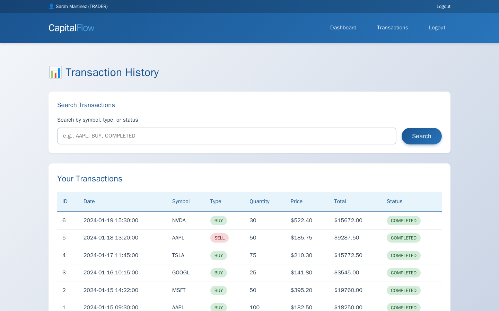
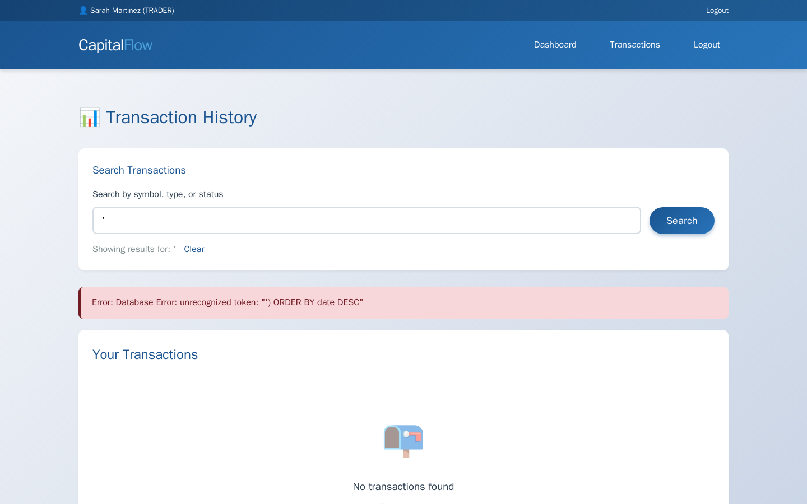

Exercise CF2.3: SQL Injection
Before You Begin
You should have completed Exercises CF2.1 (Login Bruteforce) and CF2.2 (Session Hijacking). Both exercises targeted authentication mechanisms from the outside. Exercise CF2.3 goes deeper: instead of guessing credentials or forging tokens, you will manipulate the database queries that power the application's search functionality. Your VPN must be connected and your terminal open before continuing.
Scenario
CapitalFlow Markets runs a financial reports system where authenticated users can search transaction history. Sarah Chen (CTO) flagged a concern: "The reports team built the search feature under a tight deadline. I heard they are concatenating user input directly into SQL queries. Test whether that is true, and if so, show me the worst-case impact."
You will log in as a trader, locate the transaction search feature, confirm SQL injection is possible, enumerate the database schema, and extract sensitive data from a table named admin_secrets.
Target: capitalflow-reports.lab (port 80)
Credentials: trader@capitalflow.com / Trader2024#
Your Objectives
- Add the target hostname to
/etc/hostsand authenticate as the trader - Locate the transaction search feature and test for SQL injection
- Confirm injection by observing error messages or behavioral changes
- Enumerate the database schema to identify tables and columns
- Use UNION SELECT to extract data from the
admin_secretstable - Find and submit the flag in
OCR{...}format
Background: SQL Injection in Search Features
How Search Queries Become Vulnerable
Web applications that search databases typically construct SQL queries by inserting user input into a query template. A secure implementation uses parameterized queries (also called prepared statements), where the database engine treats user input as data, never as SQL code. A vulnerable implementation concatenates user input directly into the query string, allowing an attacker to inject SQL syntax that alters the query's behavior.
Vulnerable search query (pseudocode):
query = "SELECT * FROM transactions WHERE description LIKE '%" + user_input + "%'"
result = database.execute(query)
When the user types dividend, the query becomes:
When the attacker types ' OR '1'='1, the query becomes:
The injected condition ('1'='1') is always true, causing the query to return all rows instead of filtering by the search term.
UNION-Based Extraction
The UNION operator in SQL appends the results of a second SELECT query to the results of the first. For UNION to work, both queries must return the same number of columns. An attacker uses UNION SELECT to extract data from other tables in the database by appending a crafted query to the vulnerable one.
graph TD
A["User searches<br/>'dividend'"] --> B["Normal query executes<br/>returns matching rows"]
C["Attacker searches<br/>injection payload"] --> D["Modified query executes<br/>returns all rows"]
D --> E["Attacker adds<br/>UNION SELECT"]
E --> F["Second query targets<br/>admin_secrets table"]
F --> G["Sensitive data<br/>returned in results"]
style A fill:#4a90d9,color:#fff
style B fill:#6aaa64,color:#fff
style C fill:#d9534f,color:#fff
style G fill:#d9534f,color:#fffTool Primer: SQL Injection Payloads
SQL injection testing follows a progression from detection to exploitation.
Detection payloads:
| Payload | Purpose |
|---|---|
' |
Single quote; breaks string literals and triggers SQL errors |
' OR '1'='1 |
Always-true condition; returns all rows if injectable |
' OR '1'='2 |
Always-false condition; should return no rows (confirms boolean-based injection) |
'; -- |
Terminates the statement and comments out the rest |
Column count discovery:
Increment the number of NULLs until the query executes without error. The number of NULLs that works equals the number of columns in the original query.
Data extraction:
Replace column1, column2, etc. with actual column names from the target table.
Walkthrough
Step 1: Launch the Exercise
Open the platform in your browser and start the exercise environment.
- Navigate to Exercises and locate the CapitalFlow Markets track
- Find SQL Injection and click Launch
- Wait for the status to change to Running
- Note the target IP displayed in the Active Lab View
Step 2: Add the Target to /etc/hosts
Kali - Add capitalflow-reports.lab to /etc/hosts
Replace <target_ip> with the IP shown in the Active Lab View.
Step 3: Authenticate and Access the Reports Dashboard
Log in as the trader and navigate to the transaction search feature.
Kali - Log in and save the session cookie
Kali - Access the transactions page
Read the page HTML to understand the search form structure. Look for the form action URL (e.g., /api/transactions/search or /transactions?q=), the HTTP method, and the input field name. Record these details for crafting injection payloads.
Step 4: Test a Normal Search
Perform a legitimate search to establish baseline behavior.
Kali - Search for a normal term
Review the response. Note how many results are returned and what fields each result contains (e.g., transaction_id, description, amount, date). The number of fields per result tells you the column count for the original query, which is essential for UNION-based injection.

Step 5: Test for SQL Injection with a Single Quote
The simplest injection test is a single quote character. If the application is vulnerable, the quote breaks the SQL string literal and either triggers an error or changes the response behavior.
Kali - Send a single quote to test for injection
Compare the response to your baseline. Look for:
- SQL error messages mentioning "syntax," "query," "mysql," or "SQL" (confirms injection)
- A server error (500 status) without a specific message (likely injectable but errors are suppressed)
- A normal empty response (the quote may have been escaped; try other payloads)

Step 6: Confirm Injection with OR Payloads
Test whether an always-true condition changes the result set.
Kali - Test always-true OR condition
If the response returns significantly more results than the baseline search, the OR condition was injected into the query and evaluated by the database. The search returned all transactions instead of filtering by the search term.
Kali - Test always-false OR condition for comparison
An always-false condition should return zero results (or the same as an empty search). The contrast between the always-true and always-false responses confirms boolean-based injection.
Step 7: Check Page Source for Query Comments
Developers sometimes include the generated SQL query in HTML comments for debugging. Check the response source for any query disclosure.
Kali - Search the response for SQL query comments
If the response includes the generated SQL query (in comments or error output), you can see exactly how your input is inserted and craft payloads more precisely.
Step 8: Enumerate the Database Schema
Before extracting data from admin_secrets, you need to know the database structure. Check whether the application provides a schema endpoint or use information_schema queries.
Kali - Check for a database schema API endpoint
If the schema endpoint exists, it will list the database tables and their columns. Look for the admin_secrets table and note its column names.
If no schema endpoint exists, use UNION SELECT against information_schema:
Kali - Enumerate tables via UNION injection
Adjust the number of NULL columns to match the original query's column count (determined from Step 4).
Step 9: Determine the Column Count for UNION
If you have not confirmed the column count, test incrementally.
Kali - Test with 3 columns
Kali - Test with 4 columns
Kali - Test with 5 columns
The query that does not produce an error confirms the column count. Record the number for use in the extraction step.
Step 10: Extract Data from admin_secrets
With the column count confirmed and the table structure known, craft a UNION SELECT to extract data from the admin_secrets table where user_id is 1337.
Kali - Extract admin secrets for user_id 1337
Adjust the column positions and names based on the schema information you gathered in Step 8. The response should include the admin secret data alongside (or instead of) the normal transaction results. Look for the flag in OCR{...} format within the extracted data.
Record Your Findings
Document each phase of the SQL injection attack below.
Search endpoint details:
Field Value URL Method Parameter name Injection confirmation:
Payload Response Behavior '(single quote)' OR '1'='1' OR '1'='2Column count: ____
Database tables discovered:
admin_secrets extraction:
Flag:
Analysis Questions
1. The transaction search concatenated user input directly into the SQL query. What is a parameterized query, and how does it prevent SQL injection?
Reveal Answer
A parameterized query (also called a prepared statement) separates the SQL code from the user-supplied data. The query template contains placeholders (e.g., ? or %s) instead of concatenated strings. The database engine compiles the query structure first, then inserts the user data into the placeholders as literal values. Because the data is never interpreted as SQL code, injection syntax like ' OR '1'='1 is treated as a literal search term rather than SQL logic. Parameterized queries are the primary defense against SQL injection.
2. Why does UNION-based SQL injection require matching the column count of the original query? What error would you expect if the column counts do not match?
Reveal Answer
The SQL UNION operator appends the results of one SELECT query to another, and both queries must produce the same number of columns. When the column counts do not match, the database engine returns an error (typically "The used SELECT statements have a different number of columns" in MySQL). Attackers determine the correct column count by incrementally adding NULL values until the error disappears, confirming the original query's structure.
3. The application had a /api/db-schema endpoint that exposed table and column names. Even without that endpoint, how could an attacker discover the database structure through SQL injection alone?
Reveal Answer
The attacker can query the information_schema database, which every MySQL installation includes. The information_schema.tables table lists all table names, and information_schema.columns lists all column names for each table. By using UNION SELECT against these system tables, the attacker can enumerate the entire database structure without any external documentation. For example: ' UNION SELECT table_name,column_name,NULL,NULL FROM information_schema.columns WHERE table_schema=database() -- returns every column in the current database.
4. Beyond parameterized queries, name two additional defenses that reduce the impact of SQL injection even if a vulnerability exists.
Reveal Answer
The principle of least privilege limits the database user's permissions to only what the application needs. If the web application's database account can only SELECT from the transactions table, an attacker who achieves injection cannot access other tables like admin_secrets. Web application firewalls (WAFs) inspect incoming requests for common injection patterns and block them before they reach the application. Neither defense replaces parameterized queries, but both reduce the blast radius when a vulnerability slips through code review.
Key Takeaways
- SQL injection exploits applications that concatenate user input into SQL queries, allowing attackers to alter query logic and extract unauthorized data
- UNION-based injection appends a second SELECT query to the original, enabling data extraction from any table the database user can access
- Parameterized queries are the primary defense; they ensure user input is always treated as data, never as SQL code
- Schema enumeration through
information_schemagives attackers a complete map of the database structure, even without application documentation - Defense in depth combines parameterized queries with least-privilege database accounts, input validation, and web application firewalls to minimize both the likelihood and impact of injection